import tequila as tq
import numpy as np
import matplotlib.pyplot as pltExplore the two different optimizers available through Tequila interfaces:
A native gradient descent (GD) optimizer, as well as interfaces for SciPy optimizers.
Overview
How to optimize an Objective:
In Tequila, optimizers are accessed in several ways. They may be instantiated directly as objects and then called, or they can be accessed through the tq.minimize. Both methods require an Objectiveas an obligatory argument. Additionally, tq.minimizeneeds a method, which must be a string. The call methods of the GD and SciPy optimizers accept this key as well.
You can include the usual compilation kwargs for quantum simulation in Tequilaas keywords to any optimization call.
backend, a string indicating which quantum simulator to usesamples, an integer indicating the number of shots of the circuit to measure (None means full wavefunction simulation)device, generally a string indicating which (real or emulated) quantum computer to sample from (requiressamplesbe specified)noise, the NoiseModel object to apply to the simulated circuits (see the tutorial on noise).
Additional keywords you might use are:
variables, alistof theVariablesyou want to optimize (default is all).initial_values, which gives a start point to optimization. If you supply arguments tovariables, you also need to supply arguments toinitial_valuesso that all non-optimized parameters have a value to use. The default is random initialization (not recomended)gradient, which specifies which type of gradient will be used :- analytical gradients (Default):
gradient=None - numerical gradients:
gradient={'method':'2-point', "stepsize":1.e-4} - custom gradient objectives:
gradient={tq.Variable:tq.Objective} - module specific gradients:
gradient="2-point"(to use for exampleSciPyfinite difference stencils)
- analytical gradients (Default):
silent, silence outputs
Some of the optimizers take more, or different, keywords from the others, so check the documentation for each one. In case the optimizer has some degree of verbosity (currently, they all do), you can deactivate this with silent=True.
The following optimization methods are available on your system in Tequila:
tq.optimizers.show_available_optimizers()- 1
- Get a list of all available optimizers
available methods for optimizer modules found on your system:
method | optimizer module
--------------------------
NELDER-MEAD | scipy
COBYLA | scipy
POWELL | scipy
SLSQP | scipy
L-BFGS-B | scipy
BFGS | scipy
CG | scipy
TNC | scipy
TRUST-KRYLOV | scipy
NEWTON-CG | scipy
DOGLEG | scipy
TRUST-NCG | scipy
TRUST-EXACT | scipy
TRUST-CONSTR | scipy
adam | gd
adagrad | gd
adamax | gd
nadam | gd
sgd | gd
momentum | gd
nesterov | gd
rmsprop | gd
rmsprop-nesterov | gd
spsa | gd
gpyopt-lbfgs | gpyopt
gpyopt-direct | gpyopt
gpyopt-cma | gpyopt
Supported optimizer modules: ['scipy', 'gpyopt', 'gd']
Installed optimizer modules: ['scipy', 'gd', 'gpyopt']We will use two different Objectives for optimization in this tutorial.
The first Objective \(O_1\) computes a two qubit expectation value using the tractable but non-trivial hamiltonian \([Y(0)+Qm(0)]\otimes X(1)\), where \(Qm=\frac{1}{2} (I - Z)\) is the projector onto the \(\Ket{1}\) state.
a = tq.Variable(name="a")*tq.numpy.pi
b = tq.Variable(name="b")*tq.numpy.pi
c = tq.Variable(name="c")*tq.numpy.pi
d = tq.Variable(name='d')*tq.numpy.pi
U1 = tq.gates.H(target=[0])
U1 += tq.gates.H(target=1)
U1 += tq.gates.Ry(target=0, angle=a)
U1 += tq.gates.Rz(target=1, angle=b)
U1 += tq.gates.Z(target=1,control=0)
U1 += tq.gates.Rx(target=0, angle=c)
U1 += tq.gates.Rx(target=1,angle=d)
U1 += tq.gates.Z(target=1,control=0)
H1=(tq.paulis.Y(0)+tq.paulis.Qm(0))*tq.paulis.X(1)
O1=tq.ExpectationValue(U=U1,H=H1)
print('We will optimize the following objective: \n')- 1
- Optimizing the circuit in terms of pi makes the result of the optimization easier to interpret
- 2
-
Create a 2-qubit quantum circuit for the
Objective\(O_1\) - 3
- Define the Hamiltonian for \(O_1\) to optimize over
- 4
- Define the expectation value of the Hamiltonian after applying the quantum circuit
We will optimize the following objective:
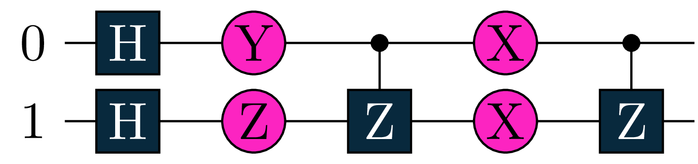
Our second Objective \(O_2\) will measure a 3-qubit circuit with respect to the Hamiltonian \(Y(0)\otimes X(1) \otimes Y(2)\).
U2 = tq.gates.Ry(tq.numpy.pi/2,0) +tq.gates.Ry(tq.numpy.pi/3,1)+tq.gates.Ry(tq.numpy.pi/4,2)
U2 += tq.gates.Rz('a',0)+tq.gates.Rz('b',1)
U2 += tq.gates.CNOT(control=0,target=1)+tq.gates.CNOT(control=1,target=2)
U2 += tq.gates.Ry('c',1) +tq.gates.Rx('d',2)
U2 += tq.gates.CNOT(control=0,target=1)+tq.gates.CNOT(control=1,target=2)
H2 = tq.paulis.Y(0)*tq.paulis.X(1)*tq.paulis.Y(2)
O2 = tq.ExpectationValue(H=H2, U=U2)
print('We will optimize the following objective: \n')- 1
- This time, we don’t optimize the circuit in terms of pi
- 2
-
Create a 3-qubit quantum circuit for the
Objective\(O_2\) - 3
- Define the Hamiltonian for \(O_2\) to optimize over
- 4
- Define the expectation value of the Hamiltonian after applying the quantum circuit
We will optimize the following objective:
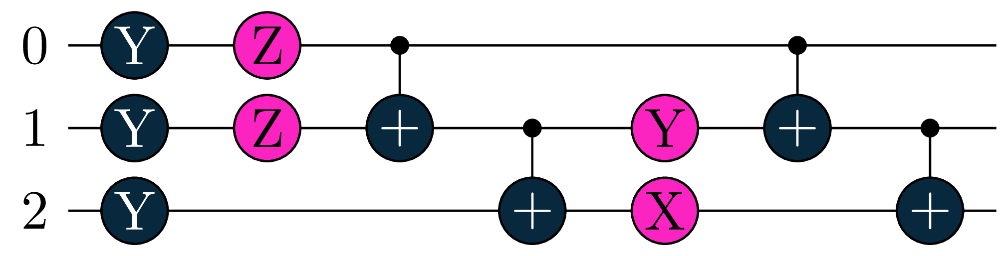
Local Optimizers
We will begin this tutorial by focusing on local optimizers. Local optimization refers to any optimization schema where the suggested parameters at step \(t\) are always a transformation of the parameters suggested at step \(t-1\). This includes a large number of the standard optimization techniques in use today, like gradient descent.
Tequila provides two local optimizers: a native gradient descent optimizer, implementing several popular gradient descent algorithms used in classical machine learning, as well as a plugin for the SciPy package (which is installed alongside Tequila), which allows the use of various gradient-free, gradient-based, and Hessian-based optimization methods.
The GD Optimizer
We will start this tutorial by looking at the GD optimizer. Here is an overview over the available optimization methods.
tq.show_available_optimizers(module="gd")- 1
- Get a list of all available optimization methods for the GD optimizer
available methods for optimizer module gd
method | optimizer module
--------------------------
adam | gd
adagrad | gd
adamax | gd
nadam | gd
sgd | gd
momentum | gd
nesterov | gd
rmsprop | gd
rmsprop-nesterov | gd
spsa | gdA variety of methods are available for optimization. Here, ‘sgd’ refers to the standard gradient descent algorithm, without momentum. Like all Tequila optimizers, the GD optimizer has a minimize function and most of the arguments are the same. However, there is one important difference: the GD optimizer takes a learning rate (lr). This parameter mediates step size in all of the GD optimizer methods; It is a positive float which scales the step in the direction of the gradient.
We will now optimize \(O_1\), our two-qubit expectation value, starting with angles equivalent to \(\frac{1}{4}\pi\) for all four variables, and optimizing via the ‘Adam’ method.
init={'a':0.25,'b':0.25,'c':0.25,'d':0.25}
lr=0.1
adam_result=tq.minimize(objective=O1,
lr=lr,
method='adam',
maxiter=80,
initial_values=init,
silent=True)- 1
- Initialize all four variables to \(\frac{1}{4}\pi\)
- 2
- Set the learning rate to 0.1
- 3
-
Optimize the objective \(O_1\) using the
Adammethod with learning rate 0.1 and maximal iterations 80 - 4
- Set silent=True to suppress output
The plots below show the trajectory of both the value of the objective and the values of the angles as a function of time.
adam_result.history.plot('energies')
adam_result.history.plot('angles')
print('best energy: ',adam_result.energy)
print('optimal angles: ',adam_result.angles)- 1
- Plot energy from Adam optimization
- 2
- Plot angles from Adam optimization
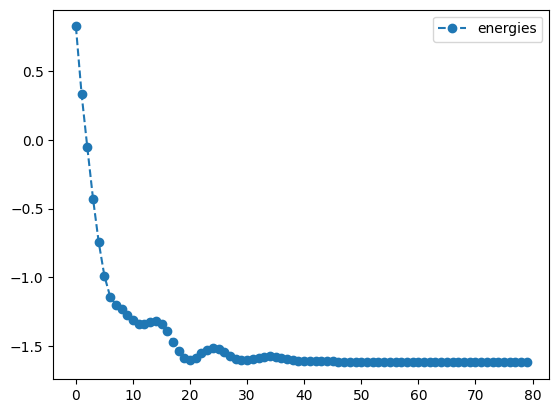
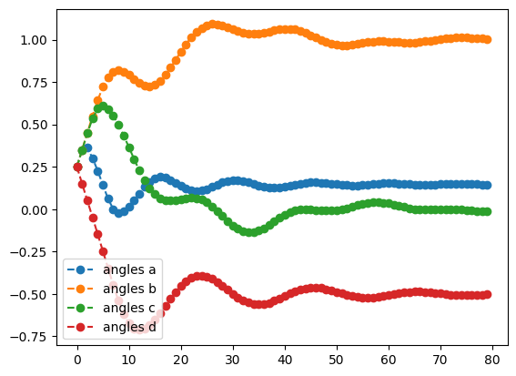
best energy: -1.6179942179567814
optimal angles: a : 0.14749685873977889
b : 1.0037045157384548
c : -0.0020942234687567523
d : -0.4982090391144128
We see that, apart from a few hiccups, all the angles converge to optimimal values.
Let’s repeat what we did above, but with a few other methods! Here’s RMSprop:
init={'a':0.25,'b':0.25,'c':0.25,'d':0.25}
lr=0.01
rms_result=tq.minimize(objective=O1,
lr=lr,
method='rmsprop',
maxiter=80,
initial_values=init,
silent=True)
print('RMSprop optimization results:')
rms_result.history.plot('energies')
rms_result.history.plot('angles')
print('best energy: ',rms_result.energy)
print('optimal angles: ',rms_result.angles)- 1
- Initialize all four variables to \(\frac{1}{4}\pi\)
- 2
- Set the learning rate to 0.01
- 3
-
Optimize the objective \(O_1\) using the
RMSpropmethod with learning rate 0.01 and maximal iterations 80 - 4
- Plot energy from RMSprop optimization
- 5
- Plot angles from RMSprop optimization
RMSprop optimization results:
best energy: -1.6180339887498942
optimal angles: a : 0.14758361765043307
b : 0.9999999875406629
c : 1.498301743024053e-08
d : -0.5
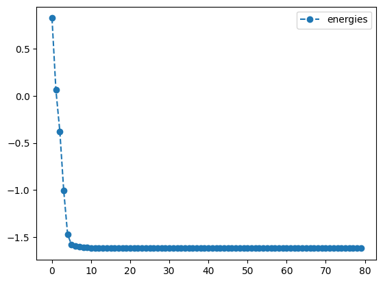
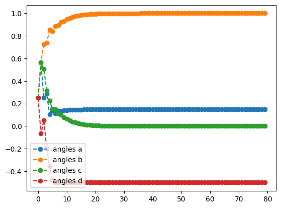
… And now let’s take a look at Momentum:
init={'a':0.25,'b':0.25,'c':0.25,'d':0.25}
lr=0.1
mom_result=tq.minimize(objective=O1,
lr=lr,
method='momentum',
maxiter=80,
initial_values=init,
silent=True)
print('momentum optimization results:')
mom_result.history.plot('energies')
mom_result.history.plot('angles')
print('best energy: ',mom_result.energy)
print('optimal angles: ',mom_result.angles)- 1
- Initialize all four variables to \(\frac{1}{4}\pi\)
- 2
- Set the learning rate to 0.1
- 3
-
Optimize the objective \(O_1\) using the
Momentummethod with learning rate 0.1 and maximal iterations 80 - 4
- Plot energy from Momentum optimization
- 5
- Plot angles from Momentum optimization
momentum optimization results:
best energy: -1.617816413662847
optimal angles: a : 0.15313030387151333
b : 0.9975386772455798
c : -0.0008949810647826415
d : -0.5018117058023004
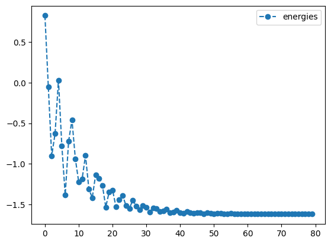
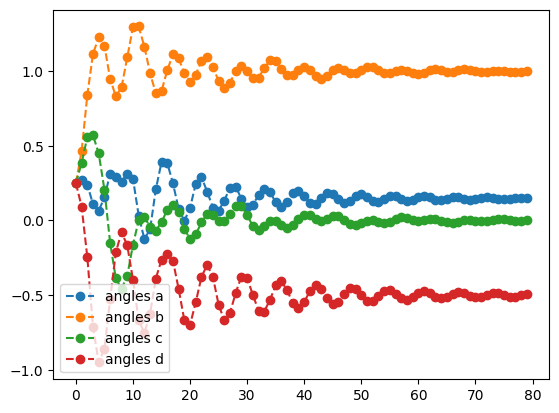
Note that when using the RMSprop method, we reduced the learning rate from \(0.1\) to \(0.01\). Different methods may be more or less sensitive to choices of initial learning rate. Feel free to revisit previous examples, and experiment with different learning rates, or initial parameters to gain insight into the sensitivity of different methods.
Accelerated gradient descent to achieve numerical accuracy:
One issue with gradient descent is that they are slow when it comes to converging to machine precision. As optimization nears an optimum, the gradient goes to zero, which means that each successive step is smaller and smaller, and convergence slows down. This is not really a problem in machine learning, where convergence to many digits is not needed, but it is an issue in chemistry.
The standard method used to converge quantum chemical calculations is an accelerated form of gradient descent alternatively called Direct Inversion of the Iterative Subspace (DIIS) or Pulay mixing (for its inventor Peter Pulay). DIIS extrapolates from the error on past function evaluation to where the error is zero using a subspace approach. It is closely related to other subpsace and Krylov methods, such as GMRES.
DIIS works best once we are pretty close to our solution. In this case, we start from a significantly better initial guess, and try to achieve a tolerance of \(\texttt{1e-10}\) with just standard gradient descent.
init={'a':0.18,'b':0.8,'c':-0.1,'d':-0.4}
lr=0.1
no_diis_result=tq.minimize(objective=O1,
lr=lr,
method='sgd',
tol=1e-10,
maxiter=80,
initial_values=init,
silent=True)- 1
- Initialize variables: \(a = 0.18\), \(b = 0.8\), \(c = -0.1\), \(d = -0.4\)
- 2
- Set the learning rate to 0.1
- 3
-
Optimize the objective \(O_1\) using the
standard gradient descentmethod with learning rate 0.1, maximal iterations 80 and a tolerance of 1e-10
Looking at the printout (obtained with silent=False instead of silent=True), we see that convergence is achieved after 46 steps. We note that specifically convergence slows down significantly after 5 steps, as the gradients (and thus step sizes) become smaller the closer we get to the minima. This is the problem DIIS solves.
Let’s try again with acceleration.
diis_result=tq.minimize(objective=O1,
lr=lr,
method='sgd',
diis={'tol':1e-1},
tol=1e-10,
maxiter=80,
initial_values=init,
silent=True)- 1
-
Optimize the objective \(O_1\) using the
standard gradient descentmethod with learning rate 0.1, maximal iterations 80, a tolerance of 1e-10 and DIIS acceleration - 2
- Set the DIIS acceleration with a tolerance of 1e-10
With the printout here (change to silent=False), the convergence is obtained in just 8 steps. We can see here that DIIS kicks in at step 3, that is, when \(\texttt{max(gradient)}\) is below \(\texttt{1e-1}\) (the tol= argument in the DIIS dictionary) and we have accumulated at least 3 vectors. Once DIIS starts, convergence is very rapid, with a four orders of magnitude drop in the error within just three steps.
We can see this most clearly in a logarithmic plot of the error.
import numpy
print('SGD + DIIS optimization results:')
Emin = diis_result.history.energies[-1]
plt.semilogy(numpy.asarray(no_diis_result.history.energies[:-1]) - Emin)
plt.semilogy(numpy.asarray(diis_result.history.energies[:-1]) - Emin)
plt.ylabel('Error on energy')
plt.legend(['without DIIS', 'with DIIS'])- 1
- Import the numpy library
- 2
- Extract the last energy values from the DISS optimization
- 3
- Plot the error on energy for every step in the optimization without DIIS acceleration
- 4
- Plot the error on energy for every step in the optimization with DIIS acceleration
- 5
- Label the y-axis of the plot as ‘Error on Energy’
- 6
- Add a legend to the plot to differentiate between the results with and without DIIS
SGD + DIIS optimization results:<matplotlib.legend.Legend at 0x16eabb100>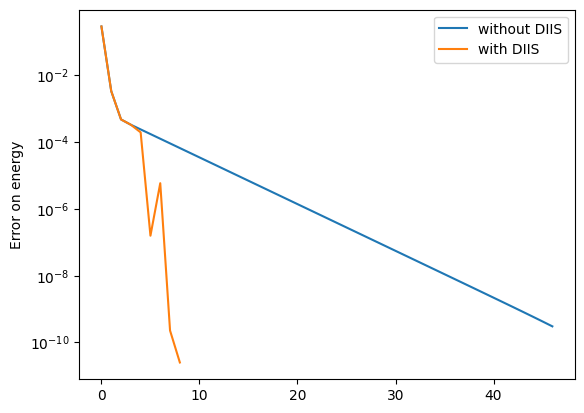
We clearly see here that when DIIS kicks in, convergence rapidly accelerates. In comparison, the convergence rate of standard gradient descent actually slows down as we approach a solution. However, it should be noted that DIIS is not entirely stable and only really works close to an optima. Furthermore, the implementation here is somewhat experimental. Please use it at your own risk!
The GD optimizer, with the Quantum Natural Gradient:
The Quantum Natural Gradient, or QNG, is a novel method of calculating gradients for quantum systems, inspired by the natural gradient sometimes employed in classical machine learning. The usual gradient we employ is with respect to a Euclidean manifold, but this is not the only geometry – nor even the optimal geometry – of quantum space. The QNG is, in essence, a method of taking gradients with respect to (an approximation to) the Fubini-Study metric. For information on how (and why) the QNG is used, see Stokes et.al.
Using the QNG in Tequila is as simple as passing in the keyword gradient='qng' to optimizers which support it, such as the GD optimizer. We will use it to optimize \(O_2\), our 3 qubit Objective, and then compare the results to optimizing the same circuit with the regular gradient.
init={k:np.random.uniform(-2,2) for k in ['a','b','c','d']}
lr=0.01
qng_result = tq.minimize(objective=O2,
gradient='qng',
method='sgd',
maxiter=200,
lr=lr,
initial_values=init,
silent=True)- 1
- keyword ‘stop_count’ stops optimization if no improvement occurs after 50 epochs
- 2
- Initialize the four variables to random values between -2 and 2
- 3
- Set the learning rate to 0.01
- 4
-
Optimize the objective \(O_2\) using the
standard gradient descentmethod with learning rate 0.01, maximal iterations 200 and the Quantum Natural Gradient (QNG) - 5
- Set the gradient to the Quantum Natural Gradient (QNG)
qng_result.history.plot('energies')
qng_result.history.plot('angles')
print('best energy with qng: ',qng_result.energy)
print('optimal angles with qng: ',qng_result.angles)- 1
- Plot the energy from the optimization with the Quantum Natural Gradient
- 2
- Plot the angles from the optimization with the Quantum Natural Gradient
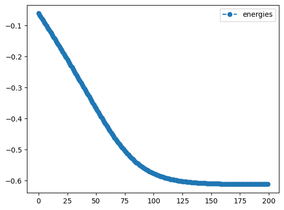
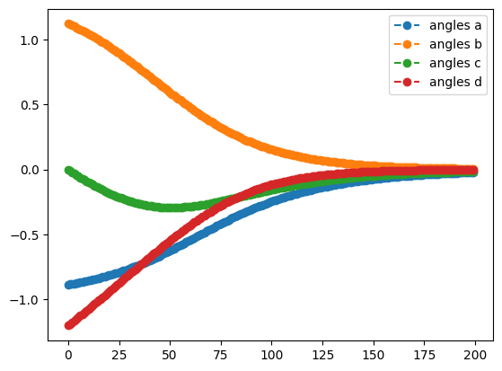
best energy with qng: -0.6121445376182162
optimal angles with qng: a : -0.02215857873260148
b : 0.0059525380064374455
c : -0.014680638935248558
d : -0.0017630474321783914
To appreciate the benefits of using the QNG, let’s optimize the same circuit with the same learning rate and method, but without QNG.
lr=0.01
sgd_noqng_result = tq.minimize(objective=O2,
gradient=None,
method='sgd',
maxiter=200,
lr=lr,
initial_values=init,
silent=True)
print('plotting what happens without QNG')
sgd_noqng_result.history.plot('energies')
sgd_noqng_result.history.plot('angles')
print('best energy without qng: ',sgd_noqng_result.energy)
print('optimal angles without qng: ',sgd_noqng_result.angles)- 1
- Set the learning rate to 0.01
- 2
-
Optimize the objective \(O_2\) using the
standard gradient descentmethod with learning rate 0.01 and maximal iterations 200 - 3
- Plot the energy from the optimization without the Quantum Natural Gradient
- 4
- Plot the angles from the optimization without the Quantum Natural Gradient
plotting what happens without QNG
best energy without qng: -0.2591823908378972
optimal angles without qng: a : -0.7272578239465537
b : 0.7880495712796224
c : -0.368377646698078
d : -0.8675949678046627
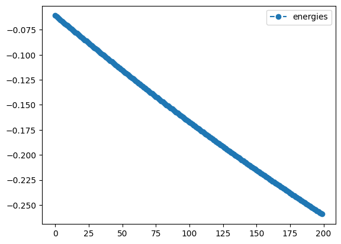
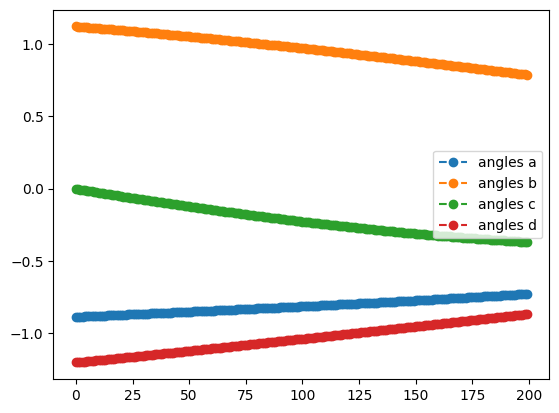
Although the starting point was random, you will most likely see that the QNG run achieved a greater degree of improvement - it will not perform worse - and that the trajectories followed by the angles were different from those in the SGD-only optimization. Feel free to play around with other methods, learning rates, or circuits in your own code!
The SciPy Optimizer
SciPy is one of the most popular optimization packages in Python. It offers a wide variety of optimization strategies. We will not cover them here; for a full exploration of all the SciPy methods, see their documentation. Instead, we will showcase a few of the more powerful options available. Most SciPy keywords like method_options, can be passed directly to minimize in the same way as when using SciPy directly.
tq.show_available_optimizers(module="scipy")- 1
- Get a list of all available optimization methods for the SciPy optimizer
available methods for optimizer module scipy
method | optimizer module
--------------------------
NELDER-MEAD | scipy
COBYLA | scipy
POWELL | scipy
SLSQP | scipy
L-BFGS-B | scipy
BFGS | scipy
CG | scipy
TNC | scipy
TRUST-KRYLOV | scipy
NEWTON-CG | scipy
DOGLEG | scipy
TRUST-NCG | scipy
TRUST-EXACT | scipy
TRUST-CONSTR | scipyWe will try three different optimizers: COBYLA, which is gradient-free; L-BFGS-B, which employs gradients; and NEWTON-CG, which employs the Hessian.
Aa a reminder, we will optimize:
init={'a':0.25,'b':0.25,'c':0.25,'d':0.25}
cobyla_result = tq.minimize(objective=O1,
method="cobyla",
initial_values=init,
tol=1.e-3,
method_options={"gtol":1.e-3},
silent=True)
cobyla_result.history.plot('energies')
cobyla_result.history.plot('angles')
print('best energy with cobyla: ',cobyla_result.energy)
print('optimal angles with cobyla: ',cobyla_result.angles)- 1
- Initialize all four variables to fixed values of \(0.25\)
- 2
-
Optimize the objective \(O_1\) using the
COBYLAmethod with a tolerance of \(1.e-3\) - 3
- Set the gradient tolerance to \(1.e-3\)
- 4
- Plot the energy from the optimization with the COBYLA method
- 5
- Plot the angles from the optimization with the COBYLA method
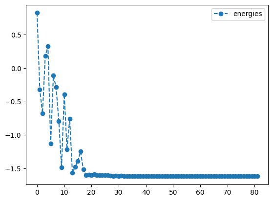
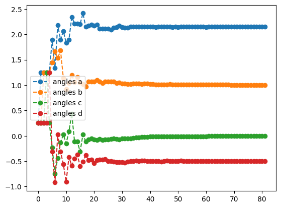
best energy with cobyla: -1.618031464593162
optimal angles with cobyla: a : 2.147373632733447
b : 1.0010269344671066
c : -0.0014082403580806177
d : -0.5000442705117792
lb_result = tq.minimize(objective=O1,
method="l-bfgs-b",
initial_values=init,
tol=1.e-3,
method_options={"gtol":1.e-3},
silent=True)
lb_result.history.plot('energies')
lb_result.history.plot('angles')
print('best energy with L-BFGS-B: ',lb_result.energy)
print('optimal angles with L-BFGS-B: ',lb_result.angles)- 1
-
Optimize the objective \(O_1\) using the
L-BFGS-Bmethod with a tolerance of \(1.e-3\) - 2
- Set the gradient tolerance to \(1.e-3\)
- 3
- Plot the energy from the optimization with the L-BFGS-B method
- 4
- Plot the angles from the optimization with the L-BFGS-B method
best energy with L-BFGS-B: -1.6178070274606597
optimal angles with L-BFGS-B: a : 0.14354397455393397
b : 1.0061132343244423
c : -0.008256863017895754
d : -0.5036909456037741
newton_result = tq.minimize(objective=O1,
method="newton-cg",
initial_values=init,
tol=1.e-3,
method_options={"gtol":1.e-3},
silent=True)
newton_result.history.plot('energies')
newton_result.history.plot('angles')
print('best energy with NEWTON-CG: ',newton_result.energy)
print('optimal angles with NEWTON-CG: ',newton_result.angles)- 1
-
Optimize the objective \(O_1\) using the
NEWTON-CGmethod with a tolerance of \(1.e-3\) - 2
- Set the gradient tolerance to \(1.e-3\)
- 3
- Plot the energy from the optimization with the NEWTON-CG method
- 4
- Plot the angles from the optimization with the NEWTON-CG method
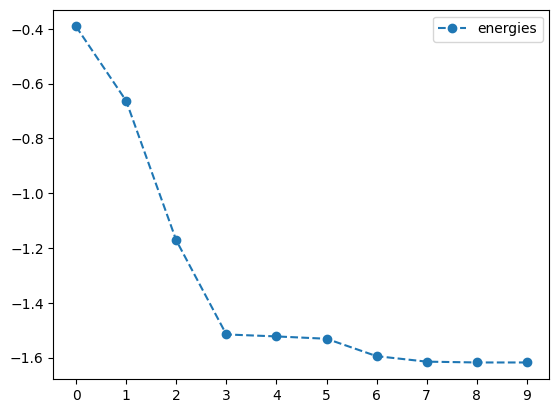
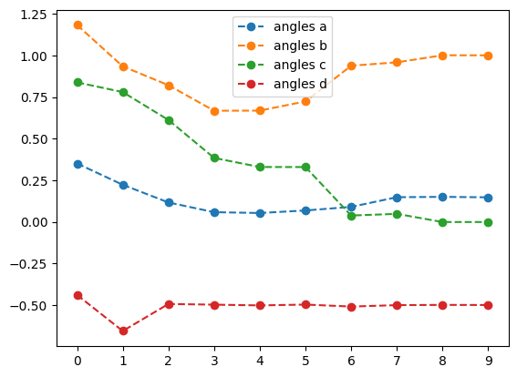
best energy with NEWTON-CG: -1.618032396266234
optimal angles with NEWTON-CG: a : 0.1475346588846646
b : 1.000870829234684
c : -0.0011056953828126209
d : -0.49984554761229166
All three of the methods converged to the same minimum, but not necessarily to the same angles; the gradient and Hessian based methods converged to approximately the same angles in similar time.
Scipy Extras: numerical gradients and Hessians
Scipy allows for the use of numerical gradients. To use them, pass down keywords to the gradient argument, such as '2-point'. When using the numerical gradients of SciPy, it is often crucial to determine a feasible step size for the procedure. This can be done with the method_options entry finite_diff_rel_step (for SciPy version 1.5 or higher) or eps (for SciPy version < 1.5).
Here is one example. Please ensure to check your SciPy version!
lb_result = tq.minimize(objective=O1,
method="l-bfgs-b",
initial_values=init,
gradient="2-point",
tol=1.e-3,
method_options={"gtol":1.e-3, "finite_diff_rel_step":1.e-4},
silent=True)
lb_result.history.plot('energies')
lb_result.history.plot('angles')
print('best energy with L-BFGS-B: ',lb_result.energy)
print('optimal angles with L-BFGS-B: ',lb_result.angles)- 1
-
Optimize the objective \(O_1\) using the
L-BFGS-Bmethod with a tolerance of \(1.e-3\), numerical gradients, and a step size of \(1.e-4\) - 2
-
Set the gradient to
2-pointto use numerical gradients - 3
- Set the step size to \(1.e-4\)
- 4
- Plot the energy from the optimization with the L-BFGS-B method and numerical gradients
- 5
- Plot the angles from the optimization with the L-BFGS-B method and numerical gradients
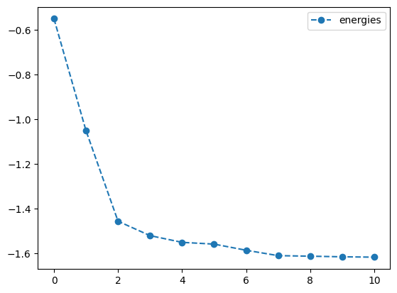
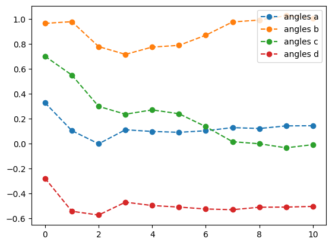
best energy with L-BFGS-B: -1.6178082631717572
optimal angles with L-BFGS-B: a : 0.1435263676387571
b : 1.0060019972486893
c : -0.00817836792105437
d : -0.5036839801675221
Scipy Extras: the QNG in SciPy
Scipy is also configured to use the QNG, just as the GD optimizer is. All one needs to do is set gradient=qng. Let’s see how QNG interacts with the BFGS optimizer. We will use \(0_2\), our 3-qubit expectation value, that we used previously.
init={k:np.random.uniform(-2,2) for k in ['a','b','c','d']}
lr=0.01
bfgs_qng_result = tq.minimize(objective=O2,
gradient='qng',
method='bfgs',
maxiter=200,
lr=lr,
initial_values=init,
silent=True)
print('plotting what happens with QNG')
bfgs_qng_result.history.plot('energies')
bfgs_qng_result.history.plot('angles')
print('best energy with qng: ',bfgs_qng_result.energy)
print('optimal angles with qng: ',bfgs_qng_result.angles)- 1
- Initialize the four variables to random values between -2 and 2
- 2
- Set the learning rate to 0.01
- 3
-
Optimize the objective \(O_2\) using the
BFGSmethod with learning rate 0.01, maximal iterations 200 and the Quantum Natural Gradient (QNG) - 4
- Set the gradient to the Quantum Natural Gradient (QNG)
- 5
- Plot the energy from the optimization with the BFGS method and the Quantum Natural Gradient
- 6
- Plot the angles from the optimization with the BFGS method and the Quantum Natural Gradient
plotting what happens with QNG
best energy with qng: -0.3535533560030429
optimal angles with qng: a : -1.57098151004744
b : 0.02566573196727211
c : 1.5704174098342945
d : 1.5706630278472251
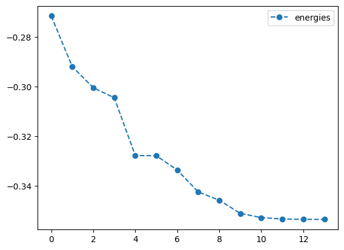
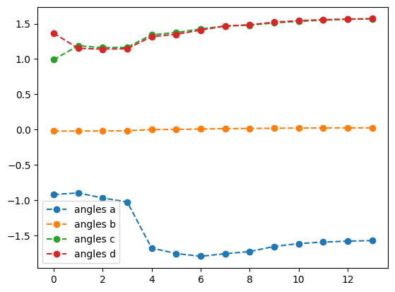
bfgs_noqng_result = tq.minimize(objective=O2,
gradient=None,
method='bfgs',
maxiter=200,
lr=lr,
initial_values=init,
silent=True)
print('plotting what happens without QNG')
bfgs_noqng_result.history.plot('energies')
bfgs_noqng_result.history.plot('angles')
print('best energy without qng: ',bfgs_noqng_result.energy)
print('optimal angles without qng: ',bfgs_noqng_result.angles)- 1
-
Optimize the objective \(O_2\) using the
BFGSmethod with learning rate 0.01 and maximal iterations 200 - 2
- Set the gradient to None
- 3
- Plot the energy from the optimization with the BFGS method
- 4
- Plot the angles from the optimization with the BFGS method
plotting what happens without QNG
best energy without qng: -0.6123722316299733
optimal angles without qng: a : 0.00023318809750098347
b : -0.0007233623236951418
c : 5.297705957416901e-05
d : -0.00029333277886757145
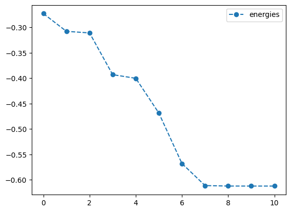
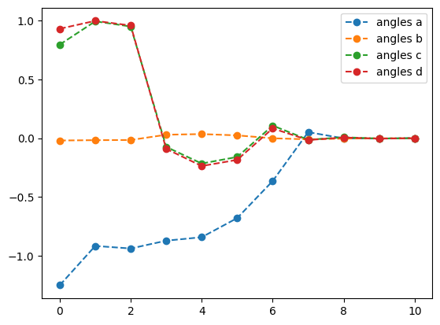
Numerical and Customized Gradients
By default Tequila compiles analytical gradients of the objectives using jax, internal recompilation, and the parameter shift rule. The default setting is not to set the gradient keyword or to set it to None. The keyword can also be set to a dictionary, where keys are the variables and values are the Tequilaobjectives assumed to evaluate to the corresponding gradients of the objective. For example, gradient=tq.grad(objective) will result in the same behavior as gradient=None or simply not setting it.
Tequila offers its own way of compiling numerical gradients, which can then be used troughout all gradient-based optimizers. This can be activated by setting gradient to a dictionary holding the finite difference stencil as the method, as well as the stepsize.
Numerical gradients of this type come with the cost of \(2 \cdot\) len(variables) and can lead to significantly cheaper gradients, especially if many expectation values are involved in the objective and/or if heavy recompilation of parametrized gates is necessary. Here is a small example using our \(O_2\) objective. Here, the numerical 2-point procedure leads to 4 expectation values in the gradients (while analytical gradients would lead to 8). You can set silent to False in the upper example or remove the gradient statement here for comparison.
lr=0.01
num_result = tq.minimize(objective=O2,
gradient={"method":"2-point", "stepsize":1.e-4},
method='sgd',
maxiter=200,
lr=lr,
initial_values=0.1,
silent=True)- 1
- Set the learning rate to 0.01
- 2
-
Optimize the objective \(O_2\) using the
standard gradient descentmethod with learning rate 0.01, maximal iterations 200 and numerical gradients with a step size of \(1.e-4\) - 3
-
Set the gradient to a dictionary with the method
2-pointfor numerical gradients and a step size of $1.e-4
num_result.history.plot('energies')- 1
- Plot the energy from the ‘standard gradient descent’ optimization with numerical gradients
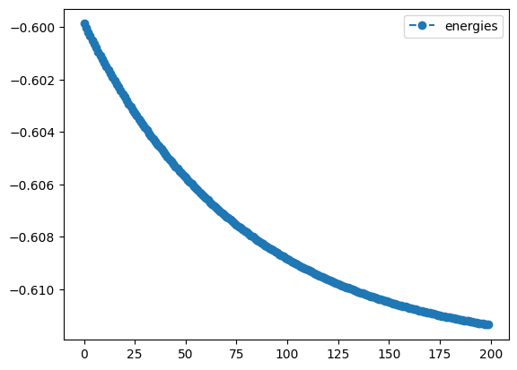
Tequila currently offers 2-point, 2-point-forward and 2-point-backward stencils as method. The method can also be set to a Python function performing the task. Here is an example that implements the same functionality as 2-point. The function can be replaced by any function with the same signature.
import copy
def my_finite_difference_stencil(obj, var_vals, key, step, *args, **kwargs):
"""
calculate objective gradient by symmetric shifts about a point.
Parameters
----------
obj: Objective:
objective to call.
var_vals:
variables to feed to the objective.
key:
which variable to shift, i.e, which variable's gradient is being called.
step:
the size of the shift; a small float.
args
kwargs
Returns
-------
float:
the approximated gradient of obj w.r.t variable key at point var_vals[key] as a float.
"""
left = copy.deepcopy(var_vals)
left[key] += step / 2
right = copy.deepcopy(var_vals)
right[key] -= step / 2
return 1.0 / step * (obj(left, *args, **kwargs) - obj(right, *args, **kwargs))
num_result = tq.minimize(objective=O2,
gradient={"method":my_finite_difference_stencil, "stepsize":1.e-4},
method='sgd',
maxiter=200,
lr=lr,
initial_values=0.1,
silent=True)
num_result.history.plot('energies')- 1
- Import the copy library to deep copy objects
- 2
- Create a deep copy of the variable
- 3
- Shift the variable to the right by half of the step size
- 4
- Create another deep copy of the variable
- 5
- Shift the variable to the left by half of the step size
- 6
- Calculate the difference gradient using the symmetric difference quotient.
- 7
-
Optimize the objective \(O_2\) using the
standard gradient descentmethod with learning rate 0.01, maximal iterations 200 and an objective gradient with a step size of \(1.e-4\) - 8
-
Set the gradient to a dictionary with the method
my_finite_difference_stenciland a step size of \(1.e-4\)

The gradient keyword can also be replaced by a dictionary of Tequila objectives which evaluate to gradients approximations of it.